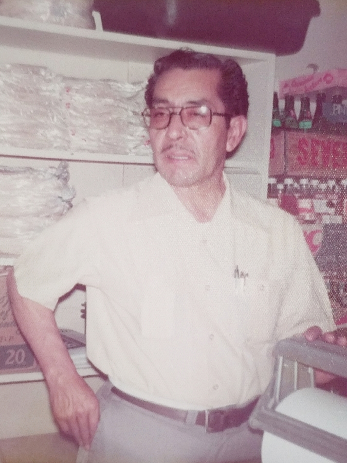
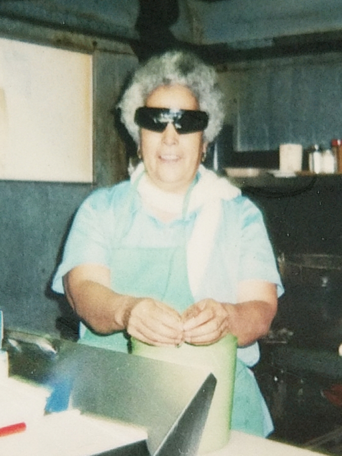

Our Story
 La Popular Tortilleria has been Barrio Logan's favorite mexican restaurant for over fifty years. Their traditional menu items bring people back to their abuela's house and introduce new people to one of the most amazing cultures of the United States.
La Popular Tortilleria started back in 1963 with just a few menu and wholesale items: rolled tacos, tamales, tortillas (the best in the West), and other Mexican staples. Since then, the menu has expanded to offer many more items.
Blanca joined the team over twelve years ago and has done an excellent job at preparing all the tasty Mexican dishes. Fresh local ingredients and tortillas deliver a taste and experience that some say are second only to a home-cooked meal.